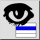
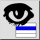
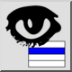
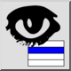

Nur aktiven Layer anzeigen
Werkzeugleiste / Symbol:
 

Menü: Layer > Nur aktiven Layer anzeigen
Tastenkürzel: Y, O
Kommandos: layershowactive | yo
Werkzeugleiste / Symbol:
 

Menü: Layer > Nur aktiven Layer anzeigen
Tastenkürzel: Y, O
Kommandos: layershowactive | yo
Dieses Werkzeug blendet alle Layer aus mit Ausnahme des im Moment in der Layerliste ausgewählten Layers.